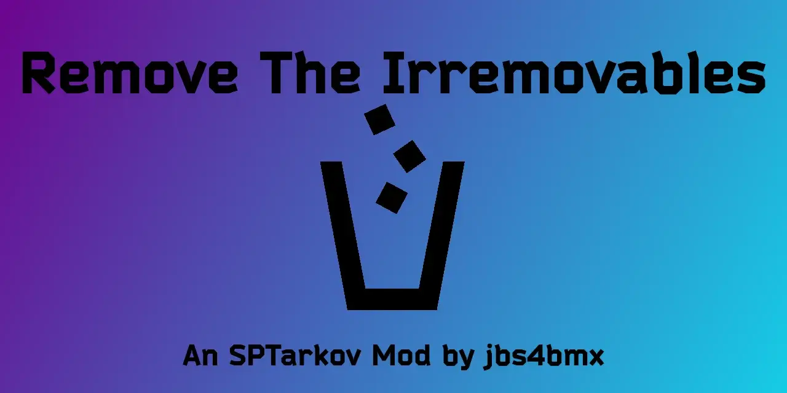

Remove The Irremovables
- Downloads
- 1,898
- Favourites
- 7
- Mod lists
- 14

Ever get too loot happy and then realize you picked up a Cultist Amulet or “The EYE” Mortar Strike device?
Ever think… “man, it would be nice to remove this crap from my inventory or drop this in raid”?
Well, now you can.
Items that can be removed include:
- Cultist Amulet
- DSP Radio Transmitter
- Mark of the Unheard
- The EYE - Mortar Strike Device
Extract the contents of the zip file to the “root” of your SPT folder.
- The same location as ‘EscapeFromTarkov.exe’.
Delete the “RemoveTheIrremovables” folder from the “[SPT]/SPT/user/mods” folder.
Compatibility with other mods is neither expressed nor implied. (Attempts will be made to correct this, but cannot be guaranteed.)
Support is neither expressed nor implied. (There is no guarantee of expedited or resultant service.)
Support is definitely NOT given to earlier versions of the mod.
If you would like to report an issue or make feature suggestions, please do so on Github.
This is definitely not required and you have every right to ignore this tab, but if you would still like to buy me a coffee, I’d greatly appreciate it. Any and all proceeds will go towards further development/maintenance of mods.
Version
4.0.0
Initial commit.
Ever get too loot happy and then realize you picked up a Cultist Amulet or “The EYE” Mortar Strike device?
Ever think… “man, it would be nice to remove this crap from my inventory or drop this in raid”?
Well, now you can.
Items that can be removed include:
- Cultist Amulet
- DSP Radio Transmitter
- Mark of the Unheard
- The EYE - Mortar Strike Device